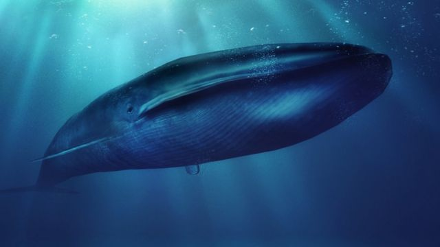
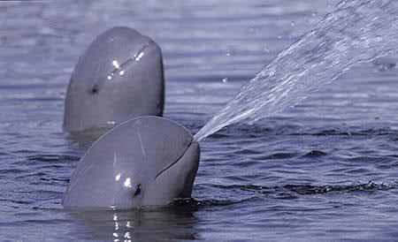

Animales Marinos en peligro de extinción
Existen muchos animales marinos en peligro de extinción. El medio marino es muy poco conocido, pero comporta el 71% de la superficie del planeta, y es donde más especies animales existen (existen muchas que no conocemos aún).
Pulse el botón para mostrar u ocultar la galeria deseada.
Aquí puedes ver las especies de animales acuáticos en peligro de extinción más importantes y destacadas:
Ballena Azul



Tiburon Blanco
Delfín del río Irrawaddy
